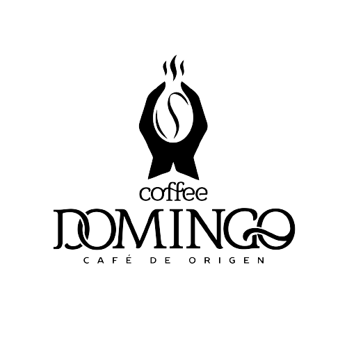

Our Clasico blend, a full-bodied coffee, is an elegant deep flavour with touches of sweet vanilla, chocolate and brown sugar sweetness. Our signature blend is grown at 1160m altitude, ensuring our farmers can unlock the full potential of the bean.
Our Premium blend, a full-bodied coffee, is an elegant deep flavour with touches of sweet vanilla, chocolate and brown sugar sweetness. Our signature blend is grown at 1160m altitude, ensuring our farmers can unlock the full potential of the bean.
Our Filter blend, a full-bodied coffee, is an elegant deep flavour with touches of sweet vanilla, chocolate and brown sugar sweetness. Our signature blend is grown at 1160m altitude, ensuring our farmers can unlock the full potential of the bean.
SYRUP APRICOT
Apricot flavor. You can use syrup to make tea, add to ice cream
and desserts, fortify smoothies, and even mix with beer
SYRUP AMARETTO
delicate and rich taste with an exquisite bitterness, it is
familiar to many from the liquor of the same name. However, this
amaretto flavor is available to a wider audience as it can be used
in soft drinks and food as well
SYRUP PINEAPPLE
The bright taste and aroma of syrup Pineapple, reminiscent of a
good holiday in southern countries, makes it an indispensable
ingredient in the preparation of completely different cocktails.
It also goes very well with milk and desserts
SYRUP ORANGE
This syrup has a rich fruity flavor. Its range of applications:
pastries, invigorating coffee, unusual and tasty ice cream, exotic
cocktails and sauces for salads
SYRUP WATERMELON
Originally from South Africa, it has spread all over the world and
has become a favorite treat of millions. add it to a milkshake,
etc
SYRUP BLUE CURACAO
Blue Curacao - the oldest and most classic syrup that came to us
from the 19th century, is known for its dark blue color. The
bitter orange aroma and tropical aftertaste distinguish it from
the rest of the species. Our "Curasao Blue" is needed almost
always and almost everywhere, especially in alcoholic and
non-alcoholic cocktails.
SYRUP BUBBLE GUM
Syrup"Bubble Gum"semisweet flavored, reminiscent of the classic
taste of gum. It goes well with carbonated water, milkshakes,
desserts and spirits
SYRUP BARBERRY
Scarlet berries with a nostalgically familiar scent of childhood
lemonade. Recall the taste of your favorite drink by making an
effervescent glass with barberry syrup
For cocktails and hot drinks. 120 flavours to make your creations
amazing.
Classic, less sugar and sugar-free and organic varieties available.
1883 LEMONADE SYRUP
1883 PANDAN SYRUP
1883 GINGER ALE SYRUP
1883 GINGER BEER SYRUP
1883 TONIC SYRUP
1883 COLA SYRUP
1883 RED PASSION FRUIT
1883 PEAR SYRUP
1883 WARM SPICES SYRUP
1883 HIBISCUS SYRUP
One of the days of millennium, when we had hard seconds between swallowing the coffee we drank and not swallowing it, it was our mind to pack quality flavors. Our claim to be the best in the industry while searching for names has dropped the name Nonno in our mind. We set out for quality production, tasteful packages, stylish labels and impressive presentations. We always kept the goals high on the way we set out. We have not enough, we have increased kinds, we have not created enough special products with our own formulas. We are proceeding with the right steps and determination to become the biggest in this business. That's why we are very pleased to be branded as Caffe Nonno. We continue to develop and take more place in the field. Be ready, you will hear our name more!
White Hot Chocolate
Sahlep
Local Filter Coffee
Puree
Мы ремонтируем любое кофейное оборудование любой сложности поломки. Если у вас сломалась кофемашина - быстрее к нам
Домашние кофемашины
Полуавтоматические
кофемашины
Суперавтоматические
кофемашины
Профессиональные
кофемашины